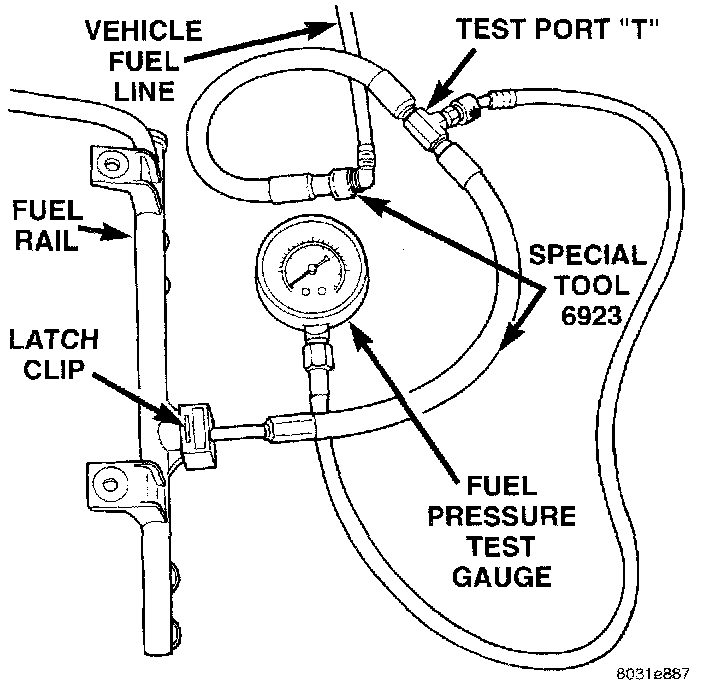

Fuel Pressure Test - Without Test Port
ENGINES WITHOUT PRESSURE TEST PORTNOTE: Use this test in conjunction with the Fuel Pump Capacity Test and Fuel Pressure Leak Down Test found elsewhere in this group.
Check Valve Operation: The electric fuel pump outlet contains a one-way check valve to prevent fuel flow back into the tank and to maintain fuel supply line pressure (engine warm) when pump is not operational. It is also used to keep the fuel supply line full of gasoline when pump is not operational. After the vehicle has cooled down, fuel pressure may drop to 0 psi (cold fluid contracts), but liquid gasoline will remain in fuel supply line between the check valve and fuel injectors. Fuel pressure that has dropped to 0 psi on a cooled down vehicle (engine off) is a normal condition. When the electric fuel pump is activated, fuel pressure should immediately rise to specification.
NOTE: The fuel pressure test port is used on certain engines only. If equipped, the test port will be located on the fuel rail. If not equipped, refer to the following procedure:
All fuel systems are equipped with a fuel tank module mounted, combination fuel filter/fuel pressure regulator. The fuel pressure regulator is not controlled by engine vacuum.
WARNING: The fuel system is under constant fuel pressure even with the engine off. Before disconnecting fuel line at fuel rail, this pressure must be released. Refer to the fuel system pressure release procedure.
1. Release fuel pressure. Refer to the Fuel Pressure Release Procedure-Without Pressure Test Port.
2. Disconnect latch clip and fuel line at fuel rail.
Fig. 9 Installing Adapter Tool And Gauge:

3. Connect adapter tool number 6923 into the fuel rail (Fig. 9). Be sure adapter tool is fully seated into fuel rail.
4. Install latch clip to fuel rail. If latch clip can not be fully seated into fuel rail, check for adapter tool not fully seated to fuel rail.
5. Connect vehicle fuel line into adapter tool 6923 (Fig. 9). Be sure fuel line is fully seated into adapter tool 6923.
6. Remove protective cap at test port "T" on adapter tool number 6923.
7. Connect the 0-414 kPa (0-60 psi) fuel pressure gauge (from gauge set 5069) to the test port "T" (Fig. 9).
8. Start and warm the engine and note pressure gauge reading. Fuel pressure should be 339 kPa +/- 34 kPa (49.2 psi +/- 5 psi) at idle.
9. If engine runs but pressure is below 44.2 psi, check for a kinked fuel supply line somewhere between fuel rail and fuel pump module. If line is not kinked, replace fuel pump module assembly.
10. If operating pressure is above 54.2 psi, electric fuel pump is OK, but fuel pressure regulator is defective. Replace fuel filter/fuel pressure regulator.
11. After performing pressure test, install fuel line into fuel rail. Install latch clip into fuel rail.